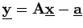
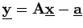
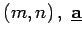
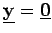
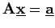
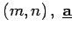
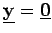
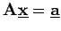

Inhalt Index DeskTop Bronstein

 Lineare Algebra Lineare Gleichungssysteme Lösung linearer Gleichungssysteme Anwendung des Austauschverfahrens
Lineare Algebra Lineare Gleichungssysteme Lösung linearer Gleichungssysteme Anwendung des Austauschverfahrens


Zur Lösung von (4.107a) wird dem linearen Gleichungssystem  ein System linearer Funktionen  zugeordnet, auf das das Austauschverfahren anzuwenden ist:
ein System linearer Funktionen  zugeordnet, auf das das Austauschverfahren anzuwenden ist:
ist äquivalent zu
Die Matrix  ist vom Typ  ist ein Spaltenvektor mit m Komponenten, d.h., die Anzahl m der Gleichungen muß nicht mit der Anzahl n der Unbekannten übereinstimmen. Nach Abschluß des Austauschverfahrens wird  gesetzt. Das Lösungsverhalten von  kann unmittelbar aus dem letzten Austauschschema abgelesen werden.
ist vom Typ  ist ein Spaltenvektor mit m Komponenten, d.h., die Anzahl m der Gleichungen muß nicht mit der Anzahl n der Unbekannten übereinstimmen. Nach Abschluß des Austauschverfahrens wird  gesetzt. Das Lösungsverhalten von  kann unmittelbar aus dem letzten Austauschschema abgelesen werden.